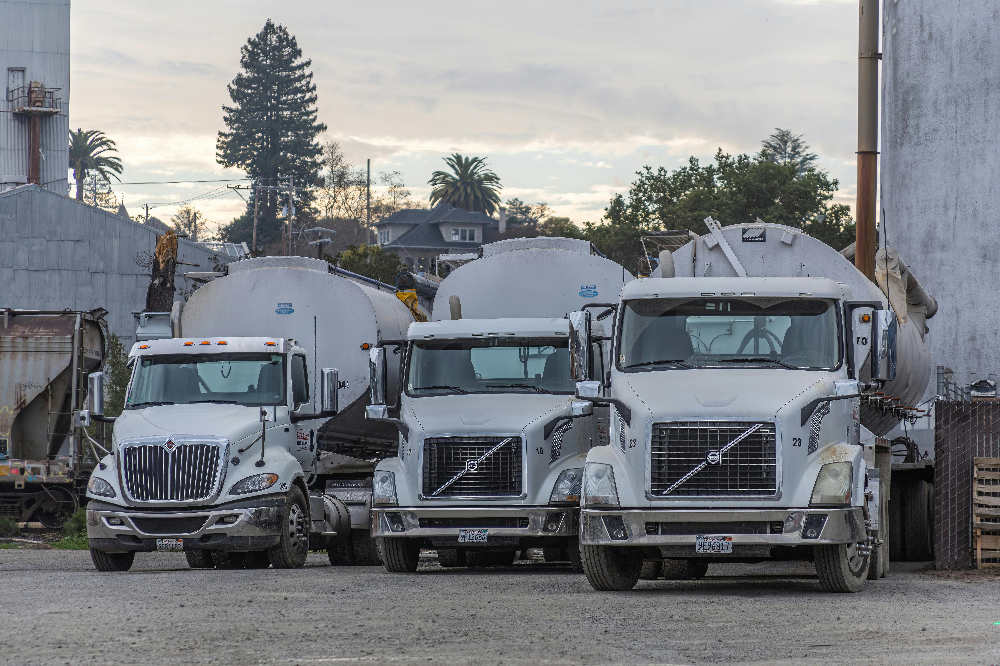
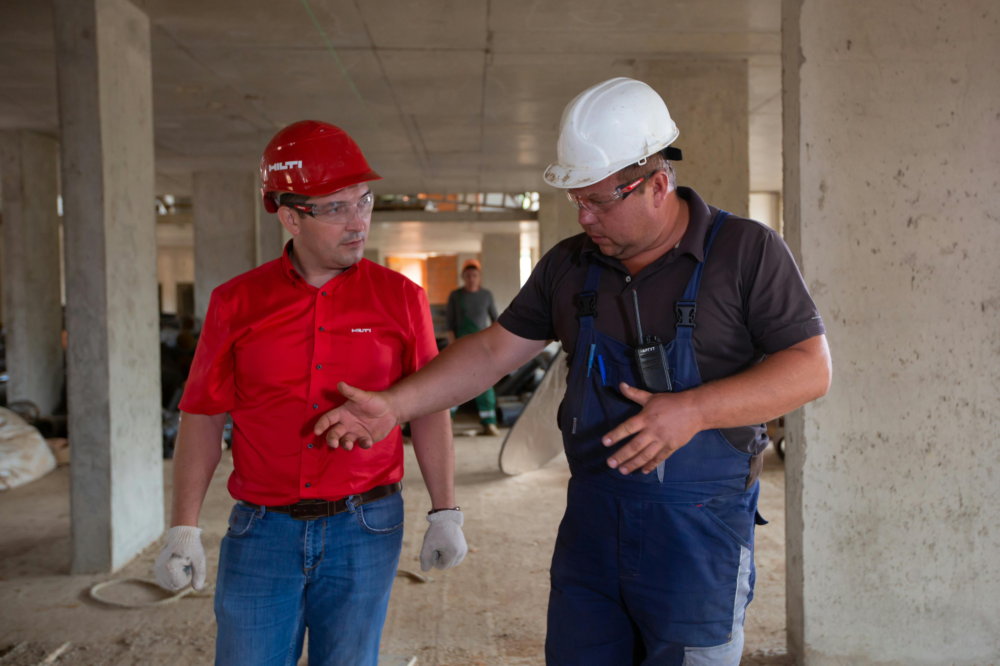
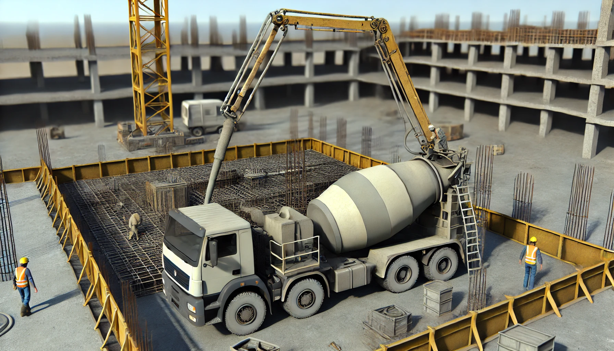
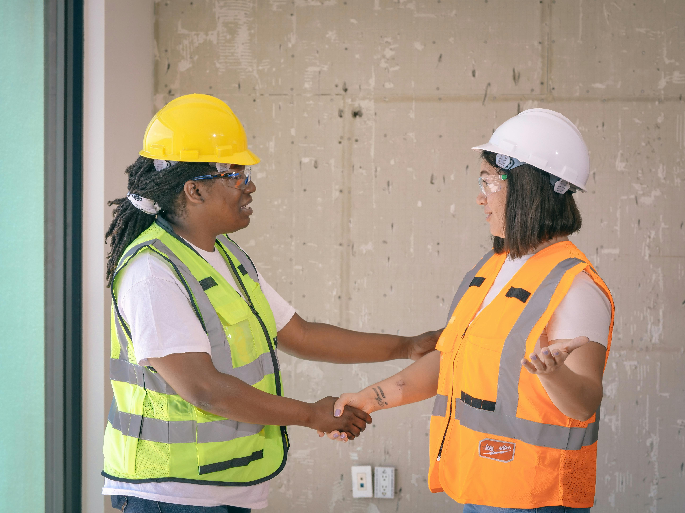

AlvoConcreto

Serviços de Entrega de Concreto
Na Alvo Concreto, somos especializados em entrega pontual de concreto, atendendo obras de pequeno, médio e grande porte em qualquer lugar da cidade. Nosso objetivo é garantir a agilidade e eficiência que você precisa para o sucesso do seu projeto.
- Entrega rápida e confiável.
- Concreto de alta qualidade para diferentes aplicações.
- Equipe dedicada e atendimento personalizado.
Consultoria Técnica Especializada
Na Alvo Concreto, oferecemos consultoria técnica especializada para projetos de construção, garantindo que seu empreendimento seja executado com a máxima precisão e qualidade. Nosso time de profissionais experientes auxilia em todas as etapas, desde a escolha dos materiais até o acompanhamento da execução da obra.
- Consultoria técnica especializada para otimização de processos.
- Análise e diagnóstico técnico detalhado para melhorias operacionais.
- Certificação de conformidade e qualidade após implementação das soluções.


Bombas de Concreto
Na Alvo Concreto, oferecemos bombas de concreto de alta performance para uma execução mais rápida e eficiente de seu projeto. Nossas bombas são ideais para obras de pequeno, médio e grande porte, garantindo a entrega do concreto onde ele for necessário, com precisão e agilidade.
- Operação e manutenção de bombas de concreto de alta performance.
- Capacitação especializada para operadores e técnicos em bombas de concreto.
- Certificação para profissionais após conclusão dos cursos específicos em bombas de concreto.
Planejamento de Obras
Na Alvo Concreto, oferecemos um planejamento estratégico e detalhado para a execução de obras, garantindo que seu projeto seja realizado dentro do prazo, orçamento e com a máxima qualidade. Nossa equipe experiente atua em todas as fases do processo, desde a concepção até a entrega final.
- Planejamento estratégico para execução eficiente de obras.
- Análise de viabilidade e gestão de cronogramas de obras.
- Certificação de conformidade com normas e qualidade no planejamento.


Projetos Personalizados
Na Alvo Concreto, desenvolvemos projetos personalizados para atender às necessidades específicas de cada cliente, garantindo soluções inovadoras e de alta qualidade. Nossa equipe trabalha lado a lado com o cliente, criando projetos sob medida que atendem às exigências de cada obra e projeto de construção.
- Criação de projetos exclusivos, adaptados às necessidades do cliente.
- Integração de tecnologia e inovação nos projetos.
- Garantia de qualidade e atendimento a todas as normas técnicas.
Garantia e Qualidade nos Projetos
Na Alvo Concreto, a garantia e qualidade são nossos principais compromissos. Cada projeto personalizado é desenvolvido com os mais altos padrões de qualidade, utilizando materiais de primeira linha e técnicas avançadas para garantir que sua obra seja segura, durável e eficiente. Nossa equipe de profissionais está sempre à disposição para assegurar que todos os detalhes atendam às normas e especificações exigidas.
- Garantia de execução conforme os padrões técnicos e regulatórios.
- Controle de qualidade rigoroso em todas as etapas do projeto.
- Materiais e técnicas de construção de alta durabilidade e resistência.
Soluções Sustentáveis
Na Alvo Concreto, estamos comprometidos com a sustentabilidade e com a redução do impacto ambiental em todas as nossas operações. Oferecemos soluções sustentáveis que priorizam o uso eficiente dos recursos, a redução de resíduos e a implementação de práticas ecológicas em nossos projetos. Acreditamos que a construção responsável é fundamental para um futuro melhor.
- Soluções sustentáveis para redução de impacto ambiental.
- Implementação de práticas ecoeficientes em processos e operações.
- Certificação de conformidade com normas ambientais e sustentabilidade.
Manutenção de Equipamentos
Na Alvo Concreto, oferecemos serviços especializados de manutenção de equipamentos para garantir que seus projetos não sejam interrompidos. Contamos com uma equipe qualificada para realizar manutenção preventiva e corretiva em máquinas e equipamentos, garantindo que eles operem com máxima eficiência e segurança durante toda a execução da obra.
- Manutenção preventiva e corretiva de equipamentos.
- Capacitação especializada para técnicos em manutenção.
- Certificação para os profissionais após conclusão dos treinamentos.
Treinamento e Capacitação
Na Alvo Concreto, oferecemos treinamentos e capacitação para profissionais da construção civil, com o objetivo de melhorar o desempenho e a segurança nas obras. Nossos cursos abordam desde o manuseio de equipamentos até as melhores práticas em segurança no trabalho, garantindo que sua equipe esteja preparada para enfrentar os desafios do setor.
- Treinamentos especializados para todas as etapas da obra.
- Capacitação em segurança e operação de equipamentos.
- Certificação para os participantes após a conclusão dos cursos.